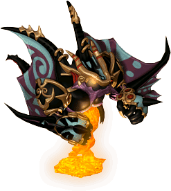

一般｜鏡之城｜異常狀態防禦｜99魔王區獎勵道具｜天上－善屬性｜天上－惡屬性｜古代神話裝備複製品
迪姆萊特系｜雷歐加爾特｜斯科爾菲吉
名稱為橘色的是可以附魔的物品。另外，未鑑定名稱是該道具在未鑑定狀態下的名稱。
一般
| 名稱 | 價格 | 限制 | 職業 | Wei | 取得方式 |
 修練用指虎 修練用指虎 | 1,000 | Lv0 | 戰修盜騎阿聖魔預吟 | 3 | 小河童 |
訓練用的指虎。因為用於練習，殺傷力被削減了。
| 名稱 | 價格 | 限制 | 職業 | Wei | 取得方式 |
| 青銅指虎 | 90,000 | Lv31 | 戰修盜騎阿聖魔預吟 | 7 | Q:脫離新手裝備3-武器 |
| 能力 | 攻15～20、CON+1、HP+10 |
| 名稱 | 價格 | 限制 | 職業 | Wei | 取得方式 |
 萬聖節南瓜指虎 萬聖節南瓜指虎 | 100 | Lv31,FLv20 | 戰修盜騎阿聖魔預吟 | 17 |  萬聖節南瓜（異次元） 萬聖節南瓜（異次元） |
| 能力 | 攻26～30 |
| 備註 | 爪狀的指虎。以撕裂的方式造成傷害 |
| 名稱 | 價格 | 限制 | 職業 | Wei | 取得方式 |
 肯比歐斯指虎(舊) 肯比歐斯指虎(舊) | 890,000 | Lv31,FLv21 | 戰修盜騎阿聖魔預吟 | 12 | 絕版 |
| 能力 | 攻43～62+隨機(BaseDAM+28～30、HIT+7～12、CON+4～5、HP+41～44、SP+40～44) |
| 名稱 | 價格 | 限制 | 職業 | Wei | 取得方式 |
 霍薩拳套 霍薩拳套 | 30,000 | Lv40 | 戰修盜騎阿聖魔預吟 | 6 | 魔界村：鐵匠、摩斯戰士、庫納、[庫納]、 獨眼怪、 獨眼怪、 迪斯 迪斯 |
| 能力 | 攻25～30、STR+2 |
| 名稱 | 價格 | 限制 | 職業 | Wei | 取得方式 |
| 泰隆指虎未鑑定名稱：指虎 | 22,000 | Lv41 | 戰修盜騎阿聖魔預吟 | 7 |  賽可魔瓜、 賽可魔瓜、 寶箱(深褐)、斬擊南瓜、 寶箱(深褐)、斬擊南瓜、 達伊特倫 達伊特倫 |
| 能力 | 攻18～20、HIT+4、CON+1、HP+10、SP+10 |
| 名稱 | 價格 | 限制 | 職業 | Wei | 取得方式 |
| 奇巴指虎未鑑定名稱：指虎 | 40,000 | Lv45 | 戰修盜騎阿聖魔預吟 | 4 | 賽凱蒂哈迪姆、巴博斯、大馬雷克斯、 YOYO諾肯、寶箱（淡褐） YOYO諾肯、寶箱（淡褐） |
| 能力 | 攻19～22、HIT+5、STR+3、CON+2、HP+20、SP+20 |
| 備註 | 圖片不同，握把部分是黑色的 |
| 名稱 | 價格 | 限制 | 職業 | Wei | 取得方式 |
| 克雷塔拳套 | 144,000 | Lv50 | 戰修盜騎阿聖魔預吟 | 8 | 魔界村：鐵匠 |
| 能力 | 攻35～40、STR+4 |
| 名稱 | 價格 | 限制 | 職業 | Wei | 取得方式 |
| 鐵指虎 | 100,000 | Lv51 | 戰修盜騎阿聖魔預吟 | 7 | Q:魔窟補給路確保-1 |
| 能力 | 攻17～22、CON+1、HP+15 |
| 名稱 | 價格 | 限制 | 職業 | Wei | 取得方式 |
| 內夫指虎未鑑定名稱：指虎 | 75,000 | Lv55 | 戰修盜騎阿聖魔預吟 | 4 |  卡梅爾船長、卡梅爾船長(黑)、 卡梅爾船長、卡梅爾船長(黑)、 海馬騎士、 海馬騎士、 海馬法師 海馬法師 |
| 能力 | 攻22～26、HIT+8、STR+6、CON+3、HP+30、SP+30 |
| 名稱 | 價格 | 限制 | 職業 | Wei | 取得方式 |
| 鉻拳套 | 87,000 | Lv60 | 戰修盜騎阿聖魔預吟 | 10 |  惡夜摩斯、魔界村：鐵匠、萊貝雅：鐵匠、 惡夜摩斯、魔界村：鐵匠、萊貝雅：鐵匠、 裝備彩券 裝備彩券 |
| 能力 | 攻55～60、STR+8 |
| 名稱 | 價格 | 限制 | 職業 | Wei | 取得方式 |
| 鉻拳套 | 87,000 | Lv60 | 戰修盜騎阿聖魔預吟 | 10 | 格魯姆蛙加農炮、寶箱（金）、尼克諾肯、斬擊南瓜(附魔) |
| 能力 | 攻55～60、STR+8 |
| 名稱 | 價格 | 限制 | 職業 | Wei | 取得方式 |
| 覺醒指虎 | 0 | Lv61 | 戰修盜騎阿聖魔預吟 | 4 | 2010回歸箱 |
| 能力 | 攻60～110、HIT+5、STR+5、CON5、HP+50 |
| 備註 | 30天內可覺醒被封印能力的武器。期間過後會消失 |
| 名稱 | 價格 | 限制 | 職業 | Wei | 取得方式 |
| 凱指虎未鑑定名稱：指虎 | 152,000 | Lv65 | 戰修盜騎阿聖魔預吟 | 6 | 格魯姆蛙加農炮、大馬雷克斯、布拉德凱蒂 |
| 能力 | 攻21～24、HIT+10、STR+8、CON+5、HP+40、SP+40 |
| 名稱 | 價格 | 限制 | 職業 | Wei | 取得方式 |
 鑽頭指虎 鑽頭指虎 | 300,000 | Lv70 | 戰修盜騎阿聖魔預吟 | 15 | 魔界村：鐵匠、弗利克爾(紫)、[弗利克爾] |
| 能力 | 攻75～80、STR+10 |
| 名稱 | 價格 | 限制 | 職業 | Wei | 取得方式 |
| 鑽頭指虎 | 100,000 | Lv70 | 戰修盜騎阿聖魔預吟 | 14 | 格魯姆蛙加農炮、[貝蒂] |
| 能力 | 攻75～80、STR+10 |
| 名稱 | 價格 | 限制 | 職業 | Wei | 取得方式 |
 卡爾瑪指虎 卡爾瑪指虎 | 1,200,000 | Lv70,FLv15 | 戰修盜騎阿聖魔預吟 | 13 | 伊卡洛斯：雜貨店、澤皮拉(紅)、強力天使、托普斯、兇猛蛋、托普斯、卡雷瓦拉森林1[op]、卡雷瓦拉森林2 |
| 能力 | 攻65～70、STR+8 |
| 名稱 | 價格 | 限制 | 職業 | Wei | 取得方式 |
| 泰特拉指虎 | 2,000,000 | Lv71 | 戰修盜騎阿聖魔預吟 | 0 | Q:泰特拉武器 |
攻60～130
不可轉讓、不可放置地面。以古代文明失落的物質製成的指虎。可用專用捲軸附魔，但會附魔什麼效果完全未知。
| 名稱 | 價格 | 限制 | 職業 | Wei | 取得方式 |
| 伊卡魯斯指虎 | - | Lv71,FLv5 | 戰修盜騎阿聖魔預吟 | 13 | Q:伊卡洛斯的成人式幫忙-1 |
| 能力 | 攻25～30、HIT+5 |
| 備註 | 從伊卡洛斯的洛格魯那裡得到的指虎 |
| 名稱 | 價格 | 限制 | 職業 | Wei | 取得方式 |
| 命運指虎 | 452,000 | Lv71,FLv15 | 戰修盜騎阿聖魔預吟 | 6 | Q:扭曲命運的武器 |
| 能力 | 攻72～82、HIT+15、CON+7 |
| 備註 | 領悟自我、開拓命運者的指虎。具有某種魔力所帶來的特殊力量。 |
| 名稱 | 價格 | 限制 | 職業 | Wei | 取得方式 |
| 鉤指虎未鑑定名稱：指虎 | 260,000 | Lv75 | 戰修盜騎阿聖魔預吟 | 8 | [石蝙蝠](灰)、格魯姆蛙加農炮、 肯比歐斯部下、海馬騎士、海馬法師 肯比歐斯部下、海馬騎士、海馬法師 |
| 能力 | 攻23～27、HIT+12、STR+10、CON+7、HP+50、SP+50 |
| 名稱 | 價格 | 限制 | 職業 | Wei | 取得方式 |
| 遺忘的鉤拳套 | 32,000 | Lv75 | 戰修盜騎阿聖魔預吟 | 9 | 嬰兒梅馬德 |
| 能力 | 攻25～29、HIT+12、CON+3、HP+30、SP+30 |
| 備註 | 死亡時消失 |
| 名稱 | 價格 | 限制 | 職業 | Wei | 取得方式 |
 刺擊碼手套 刺擊碼手套 | 250,000 | Lv81,FLv15 | 戰修盜騎阿聖魔預吟 | 8 |  堅硬魔像 堅硬魔像 |
| 能力 | 攻24～28、HIT+7、CON+4、DEX+2、HP+10、MP+10、SP+10 |
| 備註 | 在柔軟皮革製成的手套上打入金屬以提高攻擊性的裝備。有照亮黑暗的效果 |
| 名稱 | 價格 | 限制 | 職業 | Wei | 取得方式 |
 雷亞斯指虎 雷亞斯指虎 | Lv81,FLv21 | 戰修盜騎阿聖魔預吟 | 19 | 隨機彩券 | |
| 能力 | 攻85～143、DAM+12、HIT+15、AC+25、MC+10、HP-100、STR+8、CON-5、DEX+8 |
| 備註 | 捨棄防禦，換取如鬼人般攻擊力的受詛咒指虎 |
| 名稱 | 價格 | 限制 | 職業 | Wei | 取得方式 |
| 肯比歐斯指虎(新) | 890,000 | Lv81,FLv21 | 戰修盜騎阿聖魔預吟 | 12 | Q:肯比歐斯討伐 |
| 能力 | 隨機(BaseDAM+30～32、HIT+8～12、CON+4～5、HP+40～42、SP+41～43) |
| 名稱 | 價格 | 限制 | 職業 | Wei | 取得方式 |
| 火焰拳套 | 500,000 | Lv81,FLv21 | 戰修盜騎阿聖魔預吟 | 7 | Q:火焰武器 |
攻27～32、HIT+9、CON+3
天界眾神使用的武器之一，是藉由伊索尼亞記憶降臨的武器
| 名稱 | 價格 | 限制 | 職業 | Wei | 取得方式 |
 鑽頭臂 鑽頭臂 | 120,000 | Lv85,FLv21 | 戰修盜騎阿聖魔預吟 | 15 | 弗利克爾(藍)、[格蘭德拜斯]、格蘭德拜斯(藍) |
| 能力 | 攻75～80、HIT+8 |
| 名稱 | 價格 | 限制 | 職業 | Wei | 取得方式 |
| 綠地戰用鑽頭 | 130,000 | Lv91,FLv31 | 戰修盜騎阿聖魔預吟 | 16 |  冰霜貴族(藍)、冰霜貴族(紅)、九拾九之鬼、[艾米斯](附魔) 冰霜貴族(藍)、冰霜貴族(紅)、九拾九之鬼、[艾米斯](附魔) |
攻65～70、AAR+10、SAR+5、DEX+3、SP+5%
針對機動力特別調整
| 名稱 | 價格 | 限制 | 職業 | Wei | 取得方式 |
| 水陸兩用鑽頭 | 150,000 | Lv91,FLv31 | 戰修盜騎阿聖魔預吟 | 16 | 冰霜貴族(MC1)、加爾普、德拉貢騎士(附魔) |
攻65～70、AC-6、MC-4、CON+5、HP+10%
施以重視穩定性的客製化
| 名稱 | 價格 | 限制 | 職業 | Wei | 取得方式 |
| 虎爪 | 150,000 | Lv91,FLv31 | 戰修盜騎阿聖魔預吟 | 16 | 冰霜貴族(MC1)、加爾普、死亡信使(附魔) |
攻65～70、DAM+5、HIT+8、STR+12
硬度與貫穿力優異
| 名稱 | 價格 | 限制 | 職業 | Wei | 取得方式 |
| 龍寒爪 | 1,000,000 | Lv91,FLv31 | 戰修盜騎阿聖魔預吟 | 7 | Q:光環武器 |
攻30～40、HIT+14、CON+4
天界眾神使用的武器之一，是藉由伊索尼亞記憶降臨的武器
| 名稱 | 價格 | 限制 | 職業 | Wei | 取得方式 |
| 爪臂 | 160,000 | Lv95,FLv31 | 戰修盜騎阿聖魔預吟 | 18 | 冰霜貴族(MC1)、加爾普 |
攻52～147、STR+6、CON+10、DEX+8
依爪子的使用方式，可發揮高度的適應性與威力
| 名稱 | 價格 | 限制 | 職業 | Wei | 取得方式 |
| 指揮官專用爪臂 | 160,000 | Lv95,FLv31 | 戰修盜騎阿聖魔預吟 | 18 | 冰霜貴族(MC1)、加爾普、萬聖節南瓜(悠久之森2) |
攻52～147、HIT+5、AAR+8、STR+6、CON+10、DEX+8
擁有爪臂3倍的機動性
| 名稱 | 價格 | 限制 | 職業 | Wei | 取得方式 |
| 極限指虎 | 2,000,000 | Lv98,FLv50 | 戰修盜騎阿聖魔預吟 | 27 | Q:極限武器 |
攻150～230、STR+10
據說只有克服無數困難的真正勇者才能取得的傳說指虎。但是以目前的狀態無法充分發揮其力量。
| 名稱 | 價格 | 限制 | 職業 | Wei | 取得方式 |
| 極限指虎 | 2,000,000 | Lv98,FLv50 | 戰修盜騎阿聖魔預吟 | 27 | Q:極限武器 |
攻150～230、DAM+5、HIT+5、STR+10、HP+200、MP+100、SP+100
不可轉讓、不可放置地面、1個月後消失、僅可用閃耀捲軸附魔。據說只有克服無數困難的真正勇者才能取得的傳說指虎。擁有驚人的能力。
鏡之城
格里馬林
| 名稱 | 價格 | 限制 | 職業 | Wei | 取得方式 |
| (遺忘)格里馬林指虎 | - | Lv91,FLv31 | 戰修盜騎阿聖魔預吟 | 22 | 鏡之城 |
攻36～44、HIT+9、CON+5
完成使命、即將消失的武器。3天內，或死亡時消失。
| 名稱 | 價格 | 限制 | 職業 | Wei | 取得方式 |
| 格里馬林指虎 | 792,000 | Lv93,FLv41 | 戰修盜騎阿聖魔預吟 | 22 | 鏡之城 |
攻35～42、HIT+9、CON+5
完成使命、即將消失的武器。經過30天就會消失。升級後可延長武器的壽命。
斯帕克林
格雷爾
異常狀態防禦
| 名稱 | 價格 | 限制 | 職業 | Wei | 取得方式 |
| 抓撓奈爾 | 10,000 | Lv81,FLv21 | 戰修盜騎阿聖魔預吟 | 9 | 格蘭德派斯(紅) |
| 能力 | 攻46～61、HIT+8 |
| 備註 | 混亂防禦(PCount:120) |
| 名稱 | 價格 | 限制 | 職業 | Wei | 取得方式 |
| 精靈之爪未鑑定名稱：手套 | 15,000 | Lv91,FLv31 | 戰修盜騎阿聖魔預吟 | 9 | ［冰霜貴族］埃尼斯特米、冰霜貴族(紅)、 克里莫拉克夏、守護者 克里莫拉克夏、守護者 |
| 能力 | 攻56～83、HIT+8 |
| 備註 | 混亂防禦(PCount:120) |
| 名稱 | 價格 | 限制 | 職業 | Wei | 取得方式 |
 坎夏斯指虎 坎夏斯指虎 | 1,500,000 | Lv95,FLv35 | 戰修盜騎阿聖魔預吟 | 11 |  星座彩券 星座彩券 |
| 能力 | 攻86～151、DAM+8、HIT+13、HP-130、SP-30、CON-3 |
| 備註 | 可防禦混亂與中毒異常狀態的武器。對受詛咒武器附魔異常狀態防禦能力，強化了機能。混亂防禦(PCount:150)中毒防禦(PCount:150) |
| 名稱 | 價格 | 限制 | 職業 | Wei | 取得方式 |
| 迪捷雷德指虎 | 2,300,000 | Lv95,FLv35 | 戰修盜騎阿聖魔預吟 | 18 | Q:赫爾西翁製造 |
| 能力 | 攻62～85、DAM+8、HIT+7、STR+3、CON+7、DEX+4、HP+100、MP+30、SP+50 |
| 備註 | 混亂防禦(PCount:200)據說是反抗神的天使們所使用的指虎。含有美麗的天使之淚。 |
| 名稱 | 價格 | 限制 | 職業 | Wei | 取得方式 |
| 蒂亞雷德指虎 | 2,750,000 | Lv97,FLv45 | 戰修盜騎阿聖魔預吟 | 7 | Q:赫爾西翁升級 |
| 能力 | 攻64～90、DAM+10、HIT+8、STR+3、CON+8、DEX+4、HP+130、MP+50、SP+50 |
| 備註 | 混亂防禦(PCount:200)強化迪捷雷德指虎的指虎。 |
| 名稱 | 價格 | 限制 | 職業 | Wei | 取得方式 |
| 終極指虎 | 2,000,000 | Lv99,FLv51 | 戰修盜騎阿聖魔預吟 | 19 | Q:究極武器 |
| 能力 | 攻160～210、DAM+10、HIT+10、STR+3、CON+3、DEX+3、HP+30、MP+30、SP+100 critical+1% |
| 備註 | 無法移動防禦(PCount:50)地上系最強的指虎。最強修道士的證明。 |
| 名稱 | 價格 | 限制 | 職業 | Wei | 取得方式 |
| 終極指虎-壹式 | Lv99,FLv55 | 戰修盜騎阿聖魔預吟 | 20 | Q:終極武器升級 | |
| 能力 | 攻163～212、DAM+10、HIT+11、STR+3、CON+4、DEX+3、HP+40、MP+30、SP+100 critical+2% |
| 備註 | 無法移動防禦(PCount:60?)地上系最強的指虎。最強修道士的證明。單升級狀態。 |
| 名稱 | 價格 | 限制 | 職業 | Wei | 取得方式 |
| 終極指虎-貳式 | Lv99,FLv61 | 戰修盜騎阿聖魔預吟 | 21 | Q:終極武器升級 | |
| 能力 | 攻166～214、DAM+10、HIT+12、STR+4、CON+4、DEX+3、HP+50、MP+30、SP+100 critical+3% |
| 備註 | 無法移動防禦(PCount:70)地上系最強的指虎。最強修道士的證明。雙升級狀態。 |
99魔王區獎勵道具
| 名稱 | 價格 | 限制 | 職業 | Wei | 取得方式 |
 單拳套 單拳套 | 890,000 | Lv75,FLv20 | 戰修盜騎阿聖魔預吟 | 14 | Q:99魔王區 |
| 能力 | 攻40～50、DAM+3、HIT+1、STR+1、CON+1、HP+10、SP+10+隨機(BaseDAM+26～30、HIT+5～12、HP+30～50、SP+30～50) |
| 備註 | 99魔王區獎勵道具 |
| 名稱 | 價格 | 限制 | 職業 | Wei | 取得方式 |
| 雙拳套 | 890,000 | Lv78,FLv25 | 戰修盜騎阿聖魔預吟 | 14 | Q:99魔王區 |
| 能力 | 攻45～60、DAM+3、HIT+1、STR+1、CON+1、HP+15、SP+15+隨機(BaseDAM+26～30、HIT+5～12、HP+30～50、SP+30～50) |
| 備註 | 99魔王區獎勵道具 |
| 名稱 | 價格 | 限制 | 職業 | Wei | 取得方式 |
| 三拳套 | 890,000 | Lv81,FLv30 | 戰修盜騎阿聖魔預吟 | 14 | Q:99魔王區 |
| 能力 | 攻50～70、DAM+4、HIT+2、STR+2、CON+2、HP+20、SP+20+隨機(BaseDAM+26～30、HIT+5～12、HP+30～50、SP+30～50) |
| 備註 | 99魔王區獎勵道具 |
| 名稱 | 價格 | 限制 | 職業 | Wei | 取得方式 |
| 五拳套 | 890,000 | Lv84,FLv35 | 戰修盜騎阿聖魔預吟 | 14 | Q:99魔王區 |
| 能力 | 攻55～80、DAM+4、HIT+2、STR+2、CON+2、HP+25、SP+25+隨機(BaseDAM+26～30、HIT+5～12、HP+30～50、SP+30～50) |
| 備註 | 99魔王區獎勵道具 |
| 名稱 | 價格 | 限制 | 職業 | Wei | 取得方式 |
| 六指虎 | 890,000 | Lv86,FLv40 | 戰修盜騎阿聖魔預吟 | 14 | Q:99魔王區 |
| 能力 | 攻60～90、DAM+5、HIT+3、STR+2、CON+2、HP+30、SP+30+隨機(BaseDAM+26～30、HIT+5～12、HP+30～50、SP+30～50) |
| 備註 | 99魔王區獎勵道具 |
| 名稱 | 價格 | 限制 | 職業 | Wei | 取得方式 |
| 七指虎 | 890,000 | Lv88,FLv45 | 戰修盜騎阿聖魔預吟 | 14 | Q:99魔王區 |
| 能力 | 攻65～100、DAM+5、HIT+3、STR+3、CON+3、HP+35、SP+35+隨機(BaseDAM+26～30、HIT+5～12、HP+30～50、SP+30～50) |
| 備註 | 99魔王區獎勵道具 |
| 名稱 | 價格 | 限制 | 職業 | Wei | 取得方式 |
| 八拳套 | 890,000 | Lv90,FLv50 | 戰修盜騎阿聖魔預吟 | 14 | Q:99魔王區 |
| 能力 | 攻70～110、DAM+6、HIT+3、STR+3、CON+3、HP+40、SP+40+隨機(BaseDAM+26～30、HIT+5～12、HP+30～50、SP+30～50) |
| 備註 | 99魔王區獎勵道具 |
天上－善屬性
| 名稱 | 價格 | 限制 | 職業 | Wei | 取得方式 |
 帕爾塞斯拳套 帕爾塞斯拳套 | 10,000 | Lv91,FLv31TLv1,BLv1 | 戰修盜騎阿聖魔預吟 | 16 | 斯坎達倫6 |
| 能力 | 攻30～35、HIT+8、CON+3 |
| 名稱 | 價格 | 限制 | 職業 | Wei | 取得方式 |
| 帕爾塞斯拳套 | 10,000 | Lv91,FLv31TLv11,BLv11 | 戰修盜騎阿聖魔預吟 | 16 | 解除封印 |
攻32～37、HIT+11、CON+4
解除封印的帕爾塞斯指虎
帕爾塞斯指虎 升級
| 1階段 | 2階段 | 3階段 | 附魔值 | | |
| 名稱 | 價格 | 限制 | 職業 | Wei | 取得方式 |
| 庫修倫指虎 | 20,000 | Lv93,FLv41TLv31,BLv31 | 戰修盜騎阿聖魔預吟 | 16 | |
攻32～37、HIT+9、CON+4
備註：
| 名稱 | 價格 | 限制 | 職業 | Wei | 取得方式 |
| 庫修倫指虎 | 20,000 | Lv93,FLv41TLv41,BLv41 | 戰修盜騎阿聖魔預吟 | 16 | 解除封印、  沙羅曼達 |
攻34～39、HIT+12、CON+5
解除封印的庫修倫指虎
庫修倫指虎 升級
| 1階段 | 2階段 | 3階段 | 4階段 | 5階段 | 附魔值 |
| 名稱 | 價格 | 限制 | 職業 | Wei | 取得方式 |
| 露米娜指虎 | 30,000 | Lv95,FLv51TLv61,BLv61 | 戰修盜騎阿聖魔預吟 | 20 | |
攻34～39、HIT+10、CON+5
備註：
| 名稱 | 價格 | 限制 | 職業 | Wei | 取得方式 |
| 露米娜指虎 | 30,000 | Lv95,FLv51TLv71,BLv71 | 戰修盜騎阿聖魔預吟 | 20 | 解除封印、 緹亞潔 緹亞潔 |
攻36～41、HIT+13、CON+6
解除封印的露米娜指虎
露米娜指虎 升級
| 1階段 | 2階段 | 3階段 | 4階段 | 5階段 | 附魔值 |
| 名稱 | 價格 | 限制 | 職業 | Wei | 取得方式 |
| 莉希涅指虎 | 40,000 | Lv97,FLv61TLv81,BLv81 | 戰修盜騎阿聖魔預吟 | 22 | |
[1階段封印時]攻36～41、HIT+11、CON+6
備註：
| 名稱 | 價格 | 限制 | 職業 | Wei | 取得方式 |
| 莉希涅指虎 | 40,000 | Lv97,FLv61TLv91,BLv91 | 戰修盜騎阿聖魔預吟 | 22 | 解除封印 |
| 能力 | Attack38~43 HIT14% CON7 |
| 備註 | 解除封印的莉希涅指虎 |
莉希涅指虎 升級
天上－惡屬性
| 名稱 | 價格 | 限制 | 職業 | Wei | 取得方式 |
| 斯坎達倫拳套 | 20,000 | Lv91,FLv31TLv1,BLv1 | 戰修盜騎阿聖魔預吟 | 16 | |
| 能力 | 攻30～35、HIT+8、CON+3 |
| 名稱 | 價格 | 限制 | 職業 | Wei | 取得方式 |
| 斯坎達倫拳套 | 10,000 | Lv91,FLv31TLv11,BLv11 | 戰修盜騎阿聖魔預吟 | 16 | 解除封印 |
攻30～35、HIT+11、CON+4
封印解除的斯坎達龍拳套
斯坎達龍拳套 升級
| 1階段 | 2階段 | 3階段 | 附魔值 | | |
| 名稱 | 價格 | 限制 | 職業 | Wei | 取得方式 |
| 歐佩爾拳套 | 20,000 | Lv93,FLv41TLv31,BLv31 | 戰修盜騎阿聖魔預吟 | 16 | |
攻32～37、HIT+9、CON+4
備註：
| 名稱 | 價格 | 限制 | 職業 | Wei | 取得方式 |
| 歐佩爾拳套 | 20,000 | Lv93,FLv41TLv41,BLv41 | 戰修盜騎阿聖魔預吟 | 16 | |